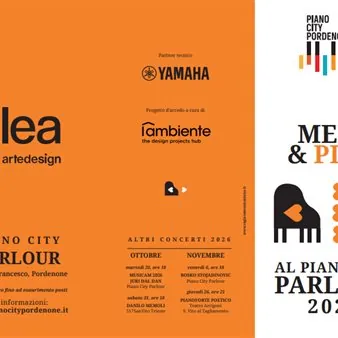

dom 8 nov · dalle 16:00
Meet & Play 2026 - FRANCO D’ANDREA
Franco D’Andrea è un musicista che non ha bisogno di presentazioni. La sua storia artistica è talmente ricca, intensa, coerente, che enumerare tutte le sue collaborazioni, i suoi incontri, le opere significative non avrebbe senso, se non in una pubblicazione allargata, che…
 Indicazioni
Indicazioni
- Costi e prenotazioni
- Costo non indicato · Prenotazione non indicata
- Programma
- Programma da verificare. Apri la fonte ufficiale per orari e possibili aggiornamenti.
- In caso di maltempo
- Nessuna indicazione specifica pubblicata.
- Note
- Acquisito automaticamente dalla fonte.
L’EVENTO
Descrizione completa
Franco D’Andrea è un musicista che non ha bisogno di presentazioni. La sua storia artistica è talmente ricca,
intensa, coerente, che enumerare tutte le sue collaborazioni, i suoi incontri, le opere significative non
avrebbe senso, se non in una pubblicazione allargata, che prendesse in esame con serietà e precisione
questa carriera formidabile nella sua totalità.
D’altra parte, per condensare in pochi tratti e in modo significativo il suo temperamento, la sua originalità,
la sua coerenza, ci vorrebbero forse le parole di un poeta. Certo, un poeta che non usasse termini
altisonanti e astrusi, ma che parlasse il linguaggio della quotidianità disadorna, ricca di senso, come hanno
fatto i nostri migliori poeti. E come fa Franco quando si esprime con il proprio strumento, sempre alla
ricerca della poesia più asciutta, scarnificata, ma profondamente vera, scaturita da un linguaggio che sta
mirabilmente sospeso tra la quotidianità e il soprannaturale. Un linguaggio radicato nella tradizione della
musica afroamericana, a tal punto che spesso non è facile seguirlo fino in fondo nei dettagli delle sue
divagazioni ritmiche, dei suoi insistenti riff, delle citazioni, che sono sempre appropriazioni alla ricerca di
un’autenticità. Il suo lavoro reclama dunque frequentazione, confidenza, attenzione, disposizione alla
scoperta e allo stupore.
Sono gli stessi atteggiamenti che lui stesso rivolge alla musica, in primo luogo a quella degli altri, che pochi
sanno ascoltare con tale acume. E naturalmente alla sua, svezzata al contatto con Nunzio Rotondo nella
Roma degli anni Sessanta e poi folgorata dall’incontro con Gato Barbieri, che per primo gli fa conoscere le
possibilità della creazione libera e dirompente. Lo coinvolge in avventure formidabili, come quella in cui
viene registrata la colonna sonora di Ultimo tango a Parigi.
Ingresso libero fino a esaurimento posti.
Informazioni: info@pianocitypordenone.it
IL PROGRAMMA
Programma e orari
Appuntamenti raccolti dalle fonti elencate. Dove manca un orario, non è ancora disponibile in questa scheda.
Programma pubblicato
- Dal 2026-11-08 al 2026-11-08
INFORMAZIONI UTILI
Prima di partire
- Controllare la fonte prima di partire.
ORGANIZZAZIONE